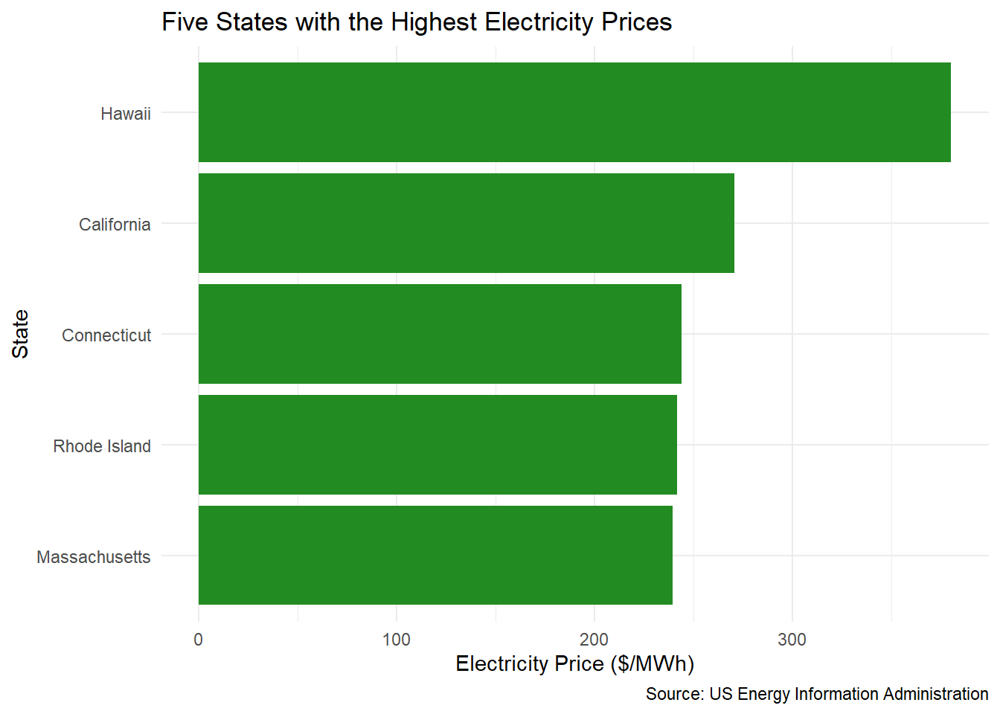
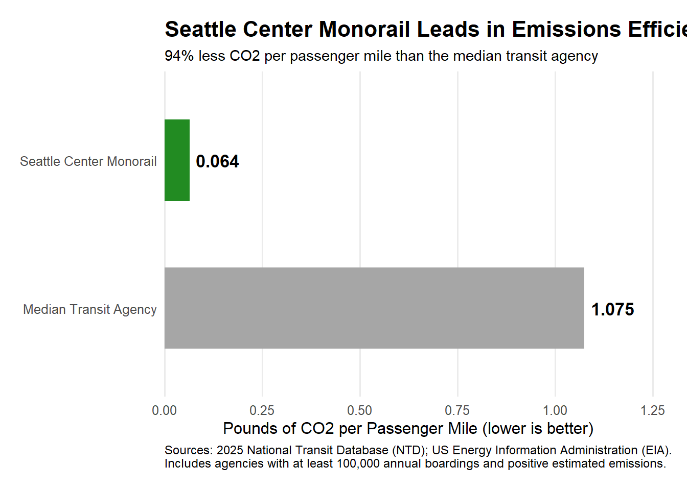
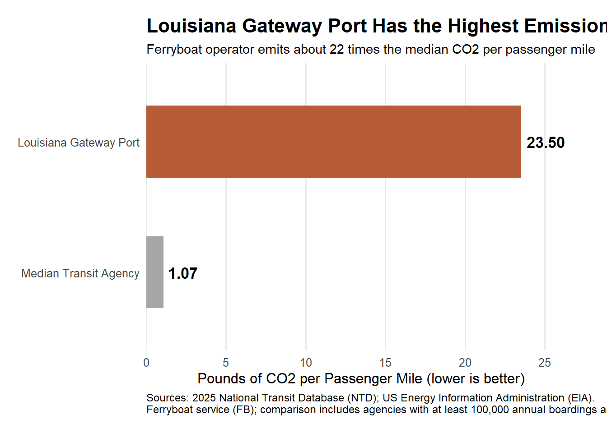

Mini Project #2: Identifying Environmentally Responsible US Public Transit Systems
Author
Carlos Austin
Published
November 8, 2026
Introduction
As Executive Director of the Green Transit Alliance (GTA), this project evaluates the environmental performance of US public transit agencies to determine the winners of the annual GTA Awards. Using data from the National Transit Database (NTD) and Energy Information Administration (EIA), the analysis combines transit ridership, energy consumption, and CO₂ emissions estimates to identify agencies with the highest and lowest emissions efficiency.
Task 1:
In this step I collected three datasets to support the analysis. The first contains state-level electricity generation and emissions data from the Energy Information Administration (EIA). The second dataset provides fuel and electricity consumption data for transit agencies from the National Transit Database (NTD). The third contains NTD service data on passenger ridership and miles traveled.
load_ntd_energy <-function(){library(readxl)library(httr2)library(tidyverse)library(fs)# Create 'data/mp02' directory if not already present DATA_DIR <- fs::path("data", "mp02") fs::dir_create(DATA_DIR, recurse=TRUE) NTD_ENERGY_FILE <- fs::path(DATA_DIR, "2025_ntd_energy.xlsx")if(!fs::file_exists(NTD_ENERGY_FILE)){library(httr2)request("https://www.transit.dot.gov/") |>req_url_path("sites","fta.dot.gov","files","2026-09","2025 Energy Consumption_260806.xlsx") |>req_headers(`User-Agent`="Mozilla/5.0 (Macintosh; Intel Mac OS X 10.15; rv:149.0) Gecko/20100101 Firefox/149.0") |>req_perform(NTD_ENERGY_FILE) }if(file.info(NTD_ENERGY_FILE)$size <1e4){cat("I was unable to download the NTD Energy File. Please try again.\n")stop("Download failed. Please delete the corrupted file by running `unlink('data/mp02/2025_ntd_energy.xlsx')` and try again.") } to_numeric_fill_0 <-function(x){ x <-if_else(x =="-", NA, x)replace_na(as.numeric(x), 0) }read_excel(NTD_ENERGY_FILE) |>select(-c(`Reporter Type`, `Reporting Module`, `Gallons of Other Fuel`, `Other Fuel Description`)) |>mutate(across(-c(`Agency Name`, `Mode`,`TOS`), to_numeric_fill_0)) |>group_by(`NTD ID`, `Mode`, `Agency Name`) |>summarize(across(where(is.numeric), sum), .groups ="keep") |>mutate(ENERGY =sum(c_across(c(where(is.numeric))))) |>filter(ENERGY >0) |>select(-ENERGY) |>ungroup()}NTD_ENERGY <-load_ntd_energy()
Show Code
load_ntd_service <-function(){library(httr2)library(tidyverse)library(fs)# Create 'data/mp02' directory if not already present DATA_DIR <- fs::path("data", "mp02") fs::dir_create(DATA_DIR, recurse=TRUE) NTD_SERVICE_FILE <- fs::path(DATA_DIR, "2025_ntd_service.csv")if(!fs::file_exists(NTD_SERVICE_FILE)){library(httr2)request("https://data.transportation.gov/resource/4fir-qbim.csv") |>req_url_query(`$query`=paste("SELECT `_5_digit_ntd_id` AS `NTD_ID`", "`max_agency` AS `AGENCY`","`max_reporter_type` AS `reporter_type`","`max_organization_type` AS `organization_type`","`max_city` AS `city`","`max_state` AS `state`","`mode`","`type_of_service`","`max_primary_uza_code` as `uza_code`","`max_primary_uza_name` as `uza_name`","`max_primary_uza_area_sq_miles` as `uza_sq_miles`","`max_primary_uza_population` as `uza_population`","`max_service_area_sq_miles` as `service_area_sq_miles`","`max_service_area_population` as `service_area_population`","`questionable_record` as `flagged_likely_inaccurate`","`sum_unlinked_passenger_trips_upt` as `total_upt`","`sum_passenger_miles` WHERE caseless_one_of(`report_year`, '2025') limit 50000", sep=",")) |>req_headers(`User-Agent`="Mozilla/5.0 (Macintosh; Intel Mac OS X 10.15; rv:149.0) Gecko/20100101 Firefox/149.0") |>req_perform(NTD_SERVICE_FILE) }if(file.info(NTD_SERVICE_FILE)$size <1e4){cat("I was unable to download the NTD Service File. Please try again.\n")stop("Download failed. Please delete the corrupted file by running `unlink('data/mp02/2025_ntd_service.xlsx')` and try again.") }read_csv(NTD_SERVICE_FILE) |>mutate(flagged_likely_inaccurate =!is.na(flagged_likely_inaccurate))}NTD_SERVICE <-load_ntd_service()
Task 2:
In this step, I cleaned the transit energy dataset by replacing abbreviated transit mode codes with their full descriptive names. This made the data easier to interpret and improved its readability for subsequent analysis.
In this step, I conducted exploratory data analysis to identify patterns and trends across the datasets.
1. Which 5 states have the most expensive retail electricity?
Show Code
EIA_SEP_REPORT |>slice_max(electricity_price_MWh, n =5, with_ties =FALSE) |>ggplot(aes(x =reorder(state, electricity_price_MWh),y = electricity_price_MWh )) +geom_col(fill ="#228B22") +coord_flip() +labs(title ="Five States with the Highest Electricity Prices",x ="State",y ="Electricity Price ($/MWh)",caption ="Source: US Energy Information Administration" ) +theme_minimal()

2. Which five states have the dirtiest electricity mix?
Show Code
EIA_SEP_REPORT |>slice_max(CO2_MWh, n =5, with_ties =FALSE) |>select(state, CO2_MWh, primary_source) |>arrange(desc(CO2_MWh)) |> knitr::kable(format ="html",col.names =c("State","CO2 Emissions per MWh","Primary Electricity Source" ),digits =2,caption ="Five States with the Dirtiest Electricity Mix" ) |> kableExtra::kable_styling(bootstrap_options =c("striped", "hover"),full_width =FALSE ) |> kableExtra::row_spec(0,background ="#228B22",color ="white",bold =TRUE ) |> kableExtra::row_spec(c(2, 4),background ="#E8F5E9" )
Five States with the Dirtiest Electricity Mix
State
CO2 Emissions per MWh
Primary Electricity Source
West Virginia
1912
Coal
Kentucky
1744
Coal
Wyoming
1724
Coal
Missouri
1456
Coal
Hawaii
1426
Petroleum
3. On average, how many pounds of CO2 are emitted per MWh of electricity produced in the US?
On average, approximately 784.86 pounds of CO₂ are emitted per MWh of electricity generated in the United States.
4. What are the three rarest primary energy sources in the US? What is the associated cost of electricity associated with each source and in what states are they used?
Show Code
rarest_sources <- EIA_SEP_REPORT |>count(primary_source, name ="state_count") |>arrange(state_count, primary_source) |>slice_head(n =3)EIA_SEP_REPORT |>inner_join(rarest_sources, by ="primary_source") |>select(primary_source, state_count, state, electricity_price_MWh) |>arrange(state_count, primary_source, state) |> knitr::kable(format ="html",col.names =c("Primary Energy Source","Number of States","State","Electricity Price ($/MWh)" ),digits =2,caption ="Three Rarest Primary Electricity Sources in the US" ) |> kableExtra::kable_styling(bootstrap_options =c("striped", "hover"),full_width =FALSE ) |> kableExtra::row_spec(0,background ="#228B22",color ="white",bold =TRUE ) |> kableExtra::row_spec(c(2, 4),background ="#E8F5E9" )
Three Rarest Primary Electricity Sources in the US
Primary Energy Source
Number of States
State
Electricity Price ($/MWh)
Petroleum
1
Hawaii
380.0
Hydroelectric
4
Idaho
95.1
Hydroelectric
4
Oregon
111.1
Hydroelectric
4
Vermont
184.1
Hydroelectric
4
Washington
101.3
Wind
4
Iowa
93.4
Wind
4
Kansas
112.1
Wind
4
New Mexico
91.8
Wind
4
South Dakota
108.7
5. Texas, has a reputation as being the home of “dirty fossil fuels” while NY has a reputation as a leader in clean energy. How many times cleaner is NY’s energy mix than that of Texas?
The NYC transit service with the longest average passenger trip is Metro-North Commuter Railroad Company, dba: MTA Metro-North Railroad (CR, DO), with an average trip length of 24.31 miles.
###Task 4 & 5
Here, I joined the three datasets to combine transit energy consumption, passenger service information, and state-level electricity emissions data.
Show Code
service_for_join <- NTD_SERVICE |>mutate(NTD_ID =str_pad(as.character(NTD_ID),width =5,side ="left",pad ="0" ) ) |>group_by(NTD_ID, mode) |>summarise(AGENCY =first(AGENCY),state =first(state),.groups ="drop" )energy_for_join <-load_ntd_energy() |>rename(NTD_ID =`NTD ID`,mode = Mode ) |>mutate(NTD_ID =str_pad(as.character(NTD_ID),width =5,side ="left",pad ="0" ) )TRANSIT_COMBINED <- energy_for_join |>left_join( service_for_join,by =c("NTD_ID", "mode") ) |>left_join( EIA_SEP_REPORT |>select(abbreviation, CO2_MWh),by =c("state"="abbreviation") )TRANSIT_EMISSIONS <- TRANSIT_COMBINED |>mutate(CO2_Diesel =coalesce(`Gallons of Diesel Fuel`, 0) *22.45,CO2_Gasoline =coalesce(`Gallons of Gasoline`, 0) *18.73,CO2_Kerosene =coalesce(`Gallons of Kerosene`, 0) *21.78,CO2_Bunker =coalesce(`Gallons of Bunker Fuel`, 0) *24.78,CO2_LPG =coalesce(`Gallons of Liquified Petroleum Gas`, 0) *12.68,# Approximate natural gas emissionsCO2_CNG =coalesce(`Gallons of Compressed Natural Gas`, 0) *14.93,CO2_LNG =coalesce(`Gallons of Liquified Nat Gas`, 0) *13.5,# Approximate biofuel combustion emissionsCO2_Biodiesel =coalesce(`Gallons of Bio-Diesel`, 0) *22.45,CO2_Ethanol =coalesce(`Gallons of Ethanol`, 0) *12.7,# Hydrogen fuel-cell use produces no direct CO2CO2_Hydrogen =0,CO2_Electricity =case_when(coalesce(`Kilowatt hours of Electric Battery`, 0) +coalesce(`Kilowatt hours of Electric Propulsion`, 0) ==0~0,TRUE~ (coalesce(`Kilowatt hours of Electric Battery`, 0) +coalesce(`Kilowatt hours of Electric Propulsion`, 0) ) /1000* CO2_MWh ),Total_CO2_lb = CO2_Diesel + CO2_Gasoline + CO2_Kerosene + CO2_Bunker + CO2_LPG + CO2_CNG + CO2_LNG + CO2_Biodiesel + CO2_Ethanol + CO2_Hydrogen + CO2_Electricity )
###Task 6
During this phase, I normalized each transit agency’s total estimated CO₂ emissions. This allowed for more meaningful comparisons of emissions efficiency across transit agencies of different sizes.
Show Code
# Step 1: Calculate total emissions by agencyAGENCY_EMISSIONS <- TRANSIT_EMISSIONS |>group_by(NTD_ID) |>summarise(AGENCY =first(AGENCY),Total_CO2_lb =if (any(is.na(Total_CO2_lb))) {NA_real_ } else {sum(Total_CO2_lb) },.groups ="drop" )# Step 2: Calculate total transit usage by agencyAGENCY_USAGE <- NTD_SERVICE |>mutate(NTD_ID =str_pad(as.character(NTD_ID),width =5,side ="left",pad ="0" ) ) |>group_by(NTD_ID) |>summarise(Total_UPT =sum(total_upt, na.rm =TRUE),Total_Passenger_Miles =sum(sum_passenger_miles, na.rm =TRUE),.groups ="drop" )# Step 3: Calculate emissions per UPT and passenger mileAGENCY_EFFICIENCY <- AGENCY_EMISSIONS |>left_join(AGENCY_USAGE, by ="NTD_ID") |>mutate(CO2_per_UPT = Total_CO2_lb / Total_UPT,CO2_per_Passenger_Mile = Total_CO2_lb / Total_Passenger_Miles ) |>filter( Total_UPT >0, Total_Passenger_Miles >0,!is.na(Total_CO2_lb) )library(kableExtra)library(tidyverse)# Table 1: Emissions per Passenger TripAGENCY_EFFICIENCY |>filter(Total_UPT >=100000, Total_CO2_lb >0) |>arrange(CO2_per_UPT) |>select(AGENCY, CO2_per_UPT) |>head(10) |> knitr::kable(digits =3,format ="html",caption ="Top 10 Most Emissions-Efficient Transit Agencies per Passenger Trip" ) |>kable_styling(full_width =FALSE) |>row_spec(0, background ="forestgreen", color ="white", bold =TRUE)# Table 2: Emissions per Passenger MileAGENCY_EFFICIENCY |>filter(Total_UPT >=100000, Total_CO2_lb >0) |>arrange(CO2_per_Passenger_Mile) |>select(AGENCY, CO2_per_Passenger_Mile) |>head(10) |> knitr::kable(digits =3,format ="html",caption ="Top 10 Most Emissions-Efficient Transit Agencies per Passenger Mile" ) |>kable_styling(full_width =FALSE) |>row_spec(0, background ="forestgreen", color ="white", bold =TRUE)# Create dataset for the graphTOP_10_EFFICIENT <- AGENCY_EFFICIENCY |>filter( Total_UPT >=100000, Total_CO2_lb >0,!is.na(CO2_per_Passenger_Mile) ) |>arrange(CO2_per_Passenger_Mile) |>slice_head(n =10) |>mutate(Agency_Short = stringr::str_trunc(AGENCY, width =40) )# Graph: 10 Most Emissions-Efficient Transit Agenciesggplot( TOP_10_EFFICIENT,aes(x =reorder(Agency_Short, CO2_per_Passenger_Mile),y = CO2_per_Passenger_Mile )) +geom_col(fill ="#228B22") +coord_flip() +labs(title ="10 Most Emissions-Efficient US Transit Agencies",subtitle ="Agencies with at least 100,000 annual passenger boardings",x =NULL,y ="Pounds of CO2 per Passenger Mile",caption ="Sources: 2025 NTD and EIA electricity emissions data" ) +theme_minimal()
###Task 7:
Lastly, I identified the most and least emissions-efficient transit agencies using estimated CO₂ emissions per passenger mile. I compared the winning agencies against the national median to highlight differences in environmental performance and determine the recipients of the GTA Green Transit Awards.
# GTA IV Awards: Recognizing Environmental Performance in US Public Transit
2025 National Transit Environmental Performance Awards
The GTA IV Awards recognize environmental performance among US public transit agencies using data from the National Transit Database (NTD) and the US Energy Information Administration (EIA). Agencies were evaluated using estimated carbon dioxide emissions per passenger mile, with eligibility restricted to agencies reporting at least 100,000 annual passenger boardings and positive estimated emissions.
Award 1: Greenest Transit Agency
Winner: City of Seattle — Seattle Center Monorail
Seattle Center Monorail earns the Greenest Transit Agency award with an estimated 0.064 pounds of CO₂ per passenger mile.
This metric was calculated by dividing each agency’s total estimated CO₂ emissions across all transit modes by its total annual passenger miles.
For comparison, the median eligible transit agency produced approximately 1.07 pounds of CO₂ per passenger mile. Seattle Center Monorail therefore generated approximately 94% less CO₂ per passenger mile than the median agency, demonstrating exceptional emissions efficiency.
Show Code
AWARD_RESULTS <- AGENCY_EFFICIENCY |>filter( Total_UPT >=100000, Total_CO2_lb >0,is.finite(CO2_per_Passenger_Mile) )GREENEST_CHART <-tibble(Agency =c("Seattle Center Monorail", "Median Transit Agency"),CO2 =c(min(AWARD_RESULTS$CO2_per_Passenger_Mile),median(AWARD_RESULTS$CO2_per_Passenger_Mile) ))ggplot(GREENEST_CHART,aes(x =reorder(Agency, -CO2), y = CO2,fill = Agency)) +geom_col(width =0.55) +geom_text(aes(label =sprintf("%.3f", CO2)),hjust =-0.15,size =4.5,fontface ="bold" ) +coord_flip(clip ="off") +scale_fill_manual(values =c("Seattle Center Monorail"="#228B22","Median Transit Agency"="grey65" ) ) +scale_y_continuous(limits =c(0, 1.25),expand =expansion(mult =c(0, 0)) ) +labs(title ="Seattle Center Monorail Leads in Emissions Efficiency",subtitle ="94% less CO2 per passenger mile than the median transit agency",x =NULL,y ="Pounds of CO2 per Passenger Mile (lower is better)",caption =paste("Sources: 2025 National Transit Database (NTD);","US Energy Information Administration (EIA).","\nIncludes agencies with at least 100,000 annual boardings","and positive estimated emissions." ) ) +guides(fill ="none") +theme_minimal(base_size =12) +theme(plot.title =element_text(face ="bold", size =16),plot.subtitle =element_text(size =11),panel.grid.major.y =element_blank(),panel.grid.minor =element_blank(),plot.caption =element_text(size =9, hjust =0),plot.margin =margin(15, 25, 15, 15) )

Award 2: Least Emissions-Efficient Transit Agency
Winner: Plaquemines Port, Harbor and Terminal District — Louisiana Gateway Port
Louisiana Gateway Port receives the Least Emissions-Efficient Transit Agency award, recording approximately 23.5 pounds of CO₂ per passenger mile.
This award uses the same emissions-intensity metric as the Greenest Transit Agency award, but identifies the agency with the highest estimated emissions relative to passenger transportation provided.
Compared with the median of 1.07 pounds of CO₂ per passenger mile, Louisiana Gateway Port produced approximately 22 times more CO₂ per passenger mile.
Importantly, Louisiana Gateway Port operates ferryboat service, which may help explain its relatively high emissions intensity. Ferry operations can require substantial fuel consumption, particularly when passenger volumes are low. Although the agency recorded significantly higher emissions per passenger mile than the median, this result should be interpreted in the context of its transportation mode and operating conditions. Its ranking does not necessarily indicate poor operational management.
Show Code
WORST_CHART <-tibble(Agency =c("Louisiana Gateway Port", "Median Transit Agency"),CO2 =c(max(AWARD_RESULTS$CO2_per_Passenger_Mile),median(AWARD_RESULTS$CO2_per_Passenger_Mile) ))ggplot(WORST_CHART,aes(x =reorder(Agency, CO2), y = CO2,fill = Agency)) +geom_col(width =0.55) +geom_text(aes(label =sprintf("%.2f", CO2)),hjust =-0.15,size =4.5,fontface ="bold" ) +coord_flip(clip ="off") +scale_fill_manual(values =c("Louisiana Gateway Port"="#B85C38","Median Transit Agency"="grey65" ) ) +scale_y_continuous(limits =c(0, 27),expand =expansion(mult =c(0, 0)) ) +labs(title ="Louisiana Gateway Port Has the Highest Emissions Intensity",subtitle ="Ferryboat operator emits about 22 times the median CO2 per passenger mile",x =NULL,y ="Pounds of CO2 per Passenger Mile (lower is better)",caption =paste("Sources: 2025 National Transit Database (NTD);","US Energy Information Administration (EIA).","\nFerryboat service (FB); comparison includes agencies with","at least 100,000 annual boardings and positive estimated emissions." ) ) +guides(fill ="none") +theme_minimal(base_size =12) +theme(plot.title =element_text(face ="bold", size =16),plot.subtitle =element_text(size =11),panel.grid.major.y =element_blank(),panel.grid.minor =element_blank(),plot.caption =element_text(size =9, hjust =0),plot.margin =margin(15, 25, 15, 15) )

Methodology
Total CO₂ emissions were estimated using reported fuel and electricity consumption, fuel-specific emissions conversion factors, and state-level electricity emissions intensities. Agency emissions were aggregated across transit modes and divided by total annual passenger miles. The median was calculated across eligible agencies using the same filtering criteria.
These awards reflect estimated operational emissions and should not be interpreted as comprehensive lifecycle environmental assessments.
NoteAI Usage Statement
I used ChatGPT primarily for coding assistance and troubleshooting throughout this project. For example, I encountered errors when attempting to download the datasets, and ChatGPT helped me identify and resolve these issues. I also used ChatGPT to troubleshoot problems when joining the datasets, particularly when matching variables across tables. Overall, ChatGPT served as a resource for debugging code and resolving technical challenges during the analysis.